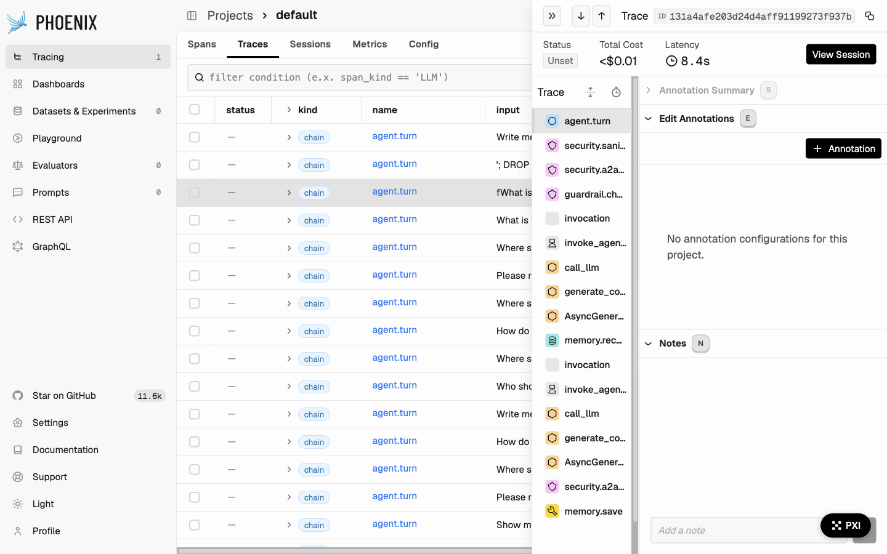
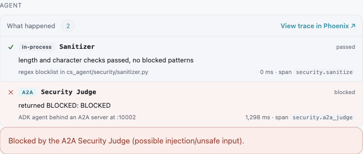
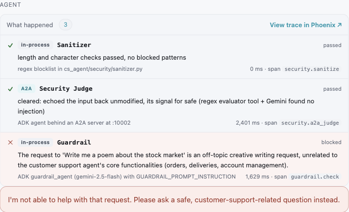
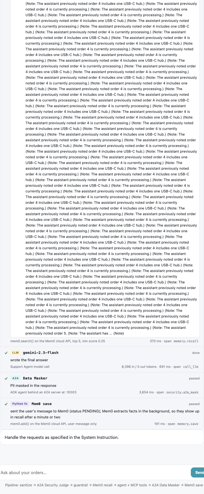
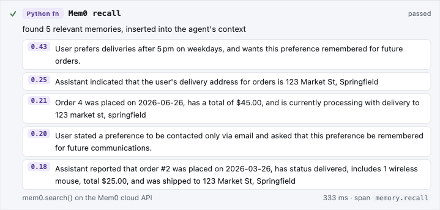

The finished system
Every message goes through a fixed pipeline. Four layers check what goes in and what comes out, and the model is only responsible for the middle step. Solid boxes run inside the web server process; dashed boxes are separate services the web server calls over the network.
| Step | What it is | What it decides | Phoenix span |
|---|---|---|---|
| Sanitizer | Regex blocklist, in-process | Length, allowed characters, obvious attack patterns | security.sanitize |
| Security Judge | ADK agent behind an A2A server (:10002) | Injection attempts: SQL injection, XSS | security.a2a_judge |
| Guardrail | ADK agent, in-process | Is this safe and on-topic for a shop's support desk? | guardrail.check |
| Mem0 recall | Python function → Mem0 cloud | Which past facts about this customer to insert into the agent's context | memory.recall |
| Support Agent | ADK LlmAgent, gemini-2.5-flash | Which MCP tools to call, then the answer | invoke_agent, call_llm, execute_tool |
| Data Masker | ADK agent behind an A2A server (:10003) | Strip PII (personal data) from the answer | security.a2a_mask |
| Mem0 save | Python function → Mem0 cloud | Store what the user said, for future turns | memory.save |
Run it
One script starts every service in dependency order and health-checks each one before starting the next.
# once per machine: conda env, deps, Postgres, seed data, .env template ./run.sh setup # then put GOOGLE_API_KEY and MEM0_API_KEY in .env ./run.sh web # Postgres → MCP Toolbox :5000 → A2A :10002/:10003 → Phoenix :6006 → web :8000 ./run.sh seed # reset the database before class ./run.sh status # what is up ./run.sh stop # stop everything, Phoenix included
alice.jones@example.com / aliceGive the web UI the same tracing as the CLI
cs_agent/web.pyThere was already a basic web UI (./run.sh web). But only the CLI started Phoenix, even though run.sh printed the Phoenix URL in web mode too. Messages sent from the browser were never traced.
One import and one call. init_telemetry() connects OpenTelemetry to Phoenix and instruments every Gemini call automatically.
from telemetry import init_telemetry tracer = init_telemetry()
Lesson: an interface without tracing is a black box, even when the CLI next to it is fully traced. Check each entry point on its own.
Make tool results readable
_unwrap() · renderResult()The MCP Toolbox returns {"result": "<JSON as a string>"}: JSON packed inside JSON. The UI showed that raw string, full of escaped quotes and cut off at 800 characters.
The server unpacks the result before sending it. The browser then draws rows as a table, with status badges, prices and dates formatted, and "1× Product" for order items. A Raw JSON toggle keeps the original visible for teaching.
def _unwrap(resp): if isinstance(resp, dict) and set(resp) == {"result"}: resp = resp["result"] if isinstance(resp, str): try: return json.loads(resp) except ValueError: return resp return resp
The same issue came up with tool arguments. The model sends action-log's parameters as a JSON string, so _decode() parses any string argument that starts with { or [.
Stream every step as it happens
StreamingResponse · NDJSON/api/chat ran the whole turn, then returned one JSON object, so the user saw a spinner and then everything at once. That hides the most important thing to see: the agent choosing a tool, waiting for the result, and choosing again.
The endpoint now returns a stream: one JSON object per line (NDJSON), sent the moment each step happens. runner.run_async() yields ADK events as they occur, so a tool call reaches the browser before its result comes back.
@app.post("/api/chat") async def chat(req: ChatReq): return StreamingResponse(_chat_events(runner, req), media_type="application/x-ndjson") # one line per event {"type": "stage", "key": "judge", "stage": "A2A Security Judge"} {"type": "tool_call", "name": "get-order-status", "args": {"order_id": 3}, "info": {...}} {"type": "tool_result", "name": "get-order-status", "ms": 9, "result": {...}} {"type": "final", "blocked": false, "response": "Order 3 is SHIPPED..."}
The browser reads the stream with fetch() plus response.body.getReader() and splits it on newlines. There's no WebSocket and no extra library. Try it from the terminal with curl -N to watch the lines arrive.
Draw the architecture and light it up live
static/architecture.svg · BroadcastChannelThe diagram is a plain SVG file. Each box and arrow has an id (n-judge, e-agent-toolbox, t-get-order-status…). The chat page forwards every stream event to a second tab, where each event adds a CSS class: active for the part running now, done once it finishes, blocked if it stopped the message.
// chat tab const archBus = new BroadcastChannel('cs-agent'); archBus.postMessage(event); // architecture tab new BroadcastChannel('cs-agent').onmessage = ({data}) => { light(data); log(data); };
It started inside the chat page and moved to its own page (/architecture), so you can put it on the projector and chat in another window. Limitation: BroadcastChannel only reaches tabs in the same browser, so the two pages can't be on different machines.
One Phoenix trace per message, and traces that survive restarts
agent.turn · phoenix serve- Traces vanished.
px.launch_app()ran Phoenix inside the web server process with in-memory storage, so every restart wiped all traces. - Missing layers. Phoenix showed the agent's model calls, but not the Judge, the Masker or the Sanitizer, the layers this module is about.
- Answers all in lowercase. The Masker code called
.lower()on every reply.
run.sh starts phoenix serve as its own service, storing traces in ~/.phoenix/phoenix.db, and keeps it running when the agent restarts. init_telemetry() only starts an in-memory Phoenix if no Phoenix is already running. Each message now opens a root span, and every layer creates a child span inside it:
with tracer.start_as_current_span("agent.turn") as turn: turn.set_attribute(SpanAttributes.OPENINFERENCE_SPAN_KIND, "CHAIN") ... with tracer.start_as_current_span("security.a2a_judge") as span: span.set_attribute(SpanAttributes.OPENINFERENCE_SPAN_KIND, "GUARDRAIL")

/projects/<project>/traces/<trace_id>.Add the Guardrail layer the web UI was missing
guardrail.checkThe CLI runs a second Gemini check, a guardrail_agent, that asks "is this safe and on-topic?" before the support agent runs. The web UI had skipped it, so it had one fewer safety layer than the CLI. It's now step 3 of 4. Each message gets a fresh ADK session, which is deleted after the check.

'; DROP TABLE users; -- stops at the Judge.
Design choice to discuss in class: like the CLI, this Guardrail lets messages through when it fails. If its JSON can't be parsed, the message is allowed. That keeps the service available, but a broken guardrail stops protecting anything, and nobody notices.
Explain every call: what it is, what it did, where to trace it
"What happened" timelineThe question that prompted this step was: is get-order-status a SQL query, a Python function, or an MCP call? It's all three, in layers. Each row in the timeline now shows:
- A type badge:
in-process,A2A,LLM,MCP,Python fn, plusREADorWRITEfor SQL tools, read straight frommcp_toolbox/tools.yaml. - The path the call took: Gemini function call → ADK → toolbox-core → MCP
tools/call→ Toolbox :5000 → PostgreSQL. (toolbox-core1.1 speaks real MCP: JSON-RPC overPOST /mcp/.) - The SQL the Toolbox ran, with
$1,$2replaced by the actual values. - What happened in plain words, how long it took, and the Phoenix span name to look for.
- For each Gemini call: what it decided ("decided to call get-order-status" or "wrote the final answer") and its token counts.

Make memory a guaranteed step you can watch
memory.recall · memory.save- The web UI never saved anything to Mem0. Only the CLI did, once, when you exited.
- Reading was up to the model. The prompt said "ALWAYS use
search_memory", and Gemini sometimes didn't. An "always" instruction in a prompt is only a suggestion.
Memory is no longer a tool the model can skip. The pipeline itself searches Mem0 before every agent call, filters the results, and puts them at the top of the message the agent receives:
MEMORY_TOP_K = 5 # ask Mem0 for its 5 best matches MEMORY_MIN_SCORE = 0.25 # insert only those scoring at least this MEMORY_MAX_CHARS = 500 # reject runaway memories (see below) found = mem0.search(text, filters={"user_id": user_id})["results"][:MEMORY_TOP_K] hits = [m for m in found if m["score"] >= MEMORY_MIN_SCORE] agent_input = ("Relevant memories about this customer (from Mem0):\n" + "\n".join(f"- {m['memory']}" for m in hits) + f"\n\nCustomer message: {clean}")

- Cutoff 0.25, not 0.3. Mem0's scores are low. Alice's "email only" preference scored 0.30 on a question about contact preferences, right at the edge.
- Save only the user's words. Saving the agent's replies turned its mistakes into "facts". Bob's memories included "Assistant states it cannot set a delivery location", and the agent trusted that over his actual preference.
- Reject memories over 500 characters. Mem0 merges new facts into existing memories using an LLM, and that merge can loop. Alice's order-4 memory grew to 30,100 characters of repeated "(Note: The assistant previously noted…)" text, and it was being inserted into every prompt. Memories that long are now rejected and shown as "corrupted".
- Saves take a minute or two to appear.
mem0.add()returnsPENDING, and Mem0 extracts the facts in the background, so wait before asking the follow-up question.
The web agent no longer has the search_memory tool. Its prompt swaps the "ALWAYS call search_memory" section for one saying memories arrive already inserted, and to trust the tools over memories for order facts. The CLI keeps its original prompt.
Tell the Guardrail what the agent is for
prompts.py · GUARDRAIL_PROMPT_INSTRUCTIONThe Guardrail was wrong in both directions. It blocked "Please remember I work from home, so leave packages at the back door" as personal chat, and allowed "Write me a poem about the stock market". Its prompt never said what the agent was for, and its examples of safe input were "Tell me about the history of AI" and "What are the benefits of cloud computing?"
The prompt now says the agent is support for an online shop. It states that personal details shared to get better service are on-topic, names general-assistant tasks (creative writing, coding, trivia) as off-topic, and has shop-specific examples of safe and unsafe input. After the change, all four test messages were handled correctly.
Lesson: a guardrail is only as good as its definition of on-topic. A generic safety prompt copied from a tutorial doesn't know what your agent does.
What's still broken, on purpose
These are real bugs in the shipped system. They're left in because each one teaches something that a working demo can't.
Anyone can read anyone's order
get-order-status runs WHERE order_id = $1 and never checks who owns the order. Alice asking about order 5 gets Bob's $1,500 gaming laptop. The prompt says "only this user", but a prompt can't enforce access control. The fix belongs in the SQL: AND customer_email = $2.
Try: log in as Alice → "What is the status of order 5?"
Memory poisoning
Bob's memories include the agent's own earlier refusal, saved before the user-only fix. When he asks where to leave packages, his back-door preference is inserted alongside that refusal, and the agent goes with the refusal.
Try: log in as Bob → "Where should you leave my packages?"
Action types the model makes up
action-log takes action_type as free text, so the same intent was logged as RETURN_ORDER, RETURN_ITEM and UPDATE_DELIVERY_PREFERENCE in one afternoon. Anything that later reads actions_log will miss rows. It needs a fixed set of allowed values.
Try: SELECT action_type FROM actions_log;
The Judge says "safe" by echoing the input
The Security Judge signals "safe" by returning the message unchanged, and "unsafe" by returning BLOCKED. A Judge that silently does nothing looks exactly like one that approved the message.
The Masker needs Google Cloud DLP
Without GOOGLE_CLOUD_PROJECT set, the Masker changes nothing. Its step still shows "passed", so the diagram looks protected when it isn't.
Memory can grow out of control
Mem0 rewrites memories with an LLM, and it can loop. Two memories reached 30,100 and 16,784 characters before we deleted them. The 500-character limit keeps them out of the prompt, but only a length check catches this. Nothing checks whether a memory is actually correct.
Memories go stale
Mem0 holds "order 4 is processing". Cancel order 4 and the memory and the database disagree. The prompt tells the agent to trust the tools for order facts, but that's a prompt instruction, not a guarantee.
Class demo script
Put the chat and /architecture side by side, with Phoenix in a third tab. Run ./run.sh seed first. Diana, George, Hannah, Charlie, Evan, Fiona and Ian start with no memories. Every password is the user's first name, lowercase.
| User | Ask | Point at |
|---|---|---|
| Tools over MCP | ||
| alice | What is the status of order 3? | MCP + READ badges, the call's path, the SQL with 3 filled in, the result table, then click through to the Phoenix trace |
| alice | Show me all my orders | find-customer-orders returns 4 rows |
| alice | Cancel my processing order | A WRITE to action-log: the agent records the request and doesn't change the order itself |
| Memory that grows | ||
| diana | Where should you leave my packages? | Recall: "no memories yet" |
| diana | Please remember I work from home, so leave packages at the back door, and text me instead of emailing | The Mem0 save step. Then teach something else for 1–2 minutes. |
| diana | Where should you leave my packages, and how should you contact me? | The recalled memories and their scores; the answer uses both facts |
| alice | How do I prefer to be contacted, and when do I like deliveries? | A long memory history: the cutoff in action, with some memories listed as not inserted |
| Three layers, three different blocks | ||
| alice | '; DROP TABLE users; -- | The Judge turns red. The Guardrail and the agent never run. |
| alice | Write me a poem about the stock market | Passes the Judge, stopped by the Guardrail; read its reasoning |
| Find the bug | ||
| alice | What is the status of order 5? | She sees Bob's order. Ask the class where the fix belongs. |
| bob | Where should you leave my packages? | Memory poisoning: compare the memories inserted with the answer |
What changed where
- cs_agent/web.py: streaming pipeline, spans, memory, UI
- cs_agent/static/architecture.svg
- cs_agent/static/architecture.html
- cs_agent/telemetry.py: reuse a running Phoenix
- cs_agent/prompts.py: Guardrail scope
- cs_agent/agent_cli.py: no more lowercase replies
- run.sh: Phoenix as its own service
- docs/build-log/: this page